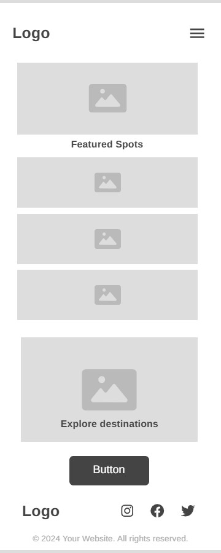
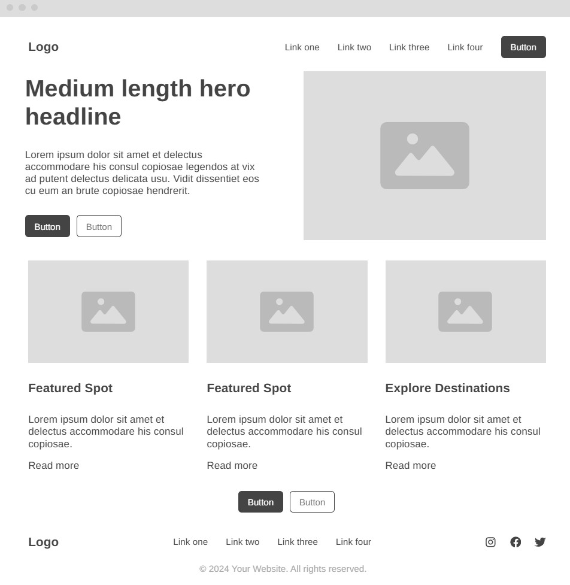

#1F2421
Deep Charcoal Green
Headings, navigation, footer, and strong text.
Website Planning Document
“Discover Peru” represents a personal guide for discovering interesting tourist spots throughout Peru. The name is short, easy to remember, and communicates the idea of exploring different destinations around my country.
Optional domain: discoverperu.pe
The site will provide a visual and practical guide to tourist spots in Peru based on personal experience, recommendations, and real destination information. Visitors will be able to explore destinations by region and type, view details about each spot, save favorite destinations, and ask for more or submit suggestions through a contact form.
The palette combines dark green, teal, natural green, sage, and a light neutral. Dark colors will provide strong readable text and navigation, while the lighter colors will create comfortable backgrounds and supporting visual areas.
Headings, navigation, footer, and strong text.
Primary buttons, links, section accents, and interactive elements.
Secondary accents, highlights, and decorative elements.
Cards, borders, subtle backgrounds, and supporting areas.
Page background and large neutral areas.
Discover Peru · Explore Peru Your Way
Used for the site title, page headings, section headings, and important labels.
Discover destinations, explore regions, and save the places you want to visit.
Used for paragraphs, navigation, descriptions, forms, buttons, and general interface text.
These sketches show the planned relationship between the major content areas of the home page. The final design may be adjusted during development.

